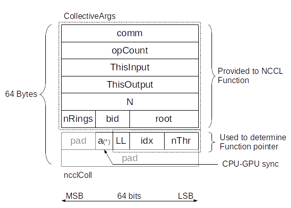
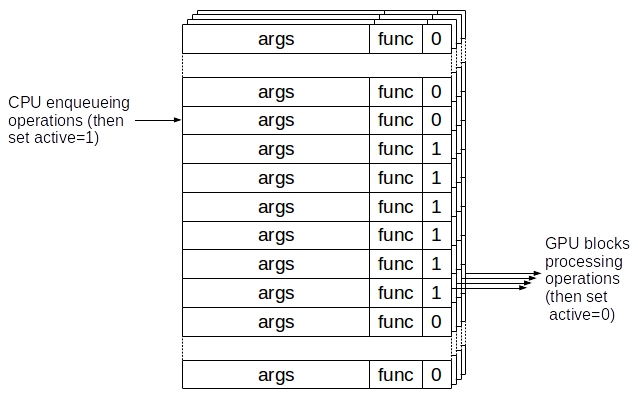

NCCL kernels are replaced by a single multi-operation kernel. This kernel can execute any NCCL operation (collectives/datatypes/reductions) and will only return when all operations are complete.
Different rings are able to perform different operations, which means that having multiple rings will increase the number of operations per second by as many rings as there are.
The CPU enqueues operations to perform in a FIFO shared with the GPU. The FIFO size is set to 2048, which is the maximum number of aggregated operations per kernel.
We extend the ncclGroupStart/ncclGroupEnd verbs to define which operations to aggregate. Within a Start/End section, the CPU will only enqueue operations in the FIFO ; ncclGroupEnd will finally launch the NCCL CUDA kernel which will process all operations.
Since the multi-op kernel has a higher latency, we generate a single-operation kernel for every LL operation which will be used instead of the multi-op kernel when only one operation has been enqueued.
Instead of generating CUDA kernels for all cases, we generate device functions, and we store the device function pointers in an array which is used by the multi-op kernel. For each operation in the FIFO, we retain the index of the function in the table, indexing the function based on : collective operation, reduction operation, datatype and number of threads.
Functions names look like ncclAllReduce_sum_f32_128 for an Allreduce doing a sum of floats (32 bits) with 128 threads.
The GPU-CPU fifo is a 2048 entries FIFO with three parts : the Collective Args as we had before, the operation information (ignored if we launch a single-operation kernel) and an "active" flag, used to sync between the CPU and GPU blocks.
To make sure we can efficiently load operations from the GPU, the structure is rounded to 64 bytes.

The active field is used to keep track of which operations have been performed. It makes sure we fail when the user tries to aggregate more than 2048 operations and also limits to 2048 outstanding operations (the CPU waits when it wants to enqueue a 2049th one). There is one FIFO per ring. When an operation is large enough to require multiple rings, one entry is enqueued in each FIFO. The "bid" field is used to let each ring play the role of any block (so that multiple blocks can perform different operations in parallel as bid "0") or a multi-block operation as their block Id (or even another any block).

To reduce the binary size, and aside from generating single-operation kernels only for LL operations, we only generate copy/int8 code for Broadcast and Allgather. All Broadcast/AllGather calls on non-int8 datatypes are converted into int8 operations, multiplying the count by the size of the datatype.
A new NCCL_MIN_NRINGS variable is added to increase the number of GPU resources used to process aggregated collectives. This makes a significant difference on systems where by default, the topology detection would create a single ring.
Users only need to extend the scope of the ncclGroupStart/ncclGroupEnd operations to aggregate operations performed by each GPU.
Typical code would look like :
ncclGroupStart();
for (int i=0; i<num_ops; i++) {
ncclAllReduce(sendbuffs[i], recvbuffs[i], counts[i], ncclFloat, ncclSum,
nccl_comm, stream);
}
ncclGroupEnd();
cudaStreamSynchronize(stream);
Per-operation latency is down to 1us per operation (compared to 10 for 8 GPUs), highly depending on the number of rings used (hence number of operations we can process concurrently).